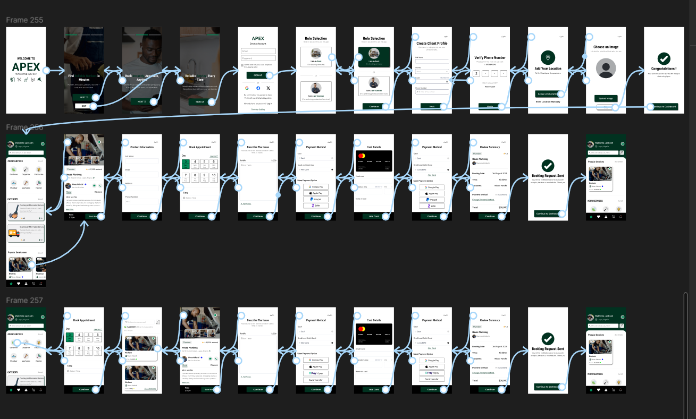

5. TEST
After designing the high-fidelity prototype, I moved into the test phase to validate whether the solution truly solved the users’ problems.
PROTOTYPE

I created an interactive prototype in Figma and tested it with my brother, my father and a female friend.
Tasks Completed
- Create an account and profile.
- Book a service.
- Navigate screens.
Key Feedback
- They were impressed with how easy the app felt in regards to navigation.
- They also gave positive remark on the simplicity of the app as it is straightforward and understandable.
- They also said the steps in creating an account, creating profile and booking a service were easy.
- They also commented on the clarity of the app.
- Mostly, they complimented the concept of the app as it is something that will help a lot of people in my country, as it is a common issue when it comes to finding reliable services.